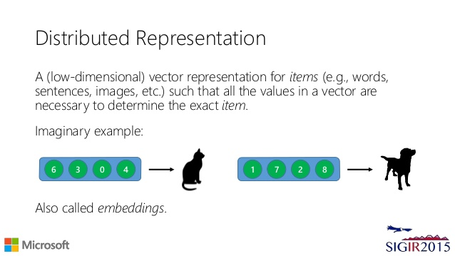
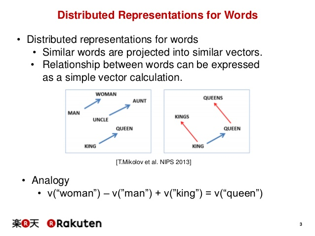
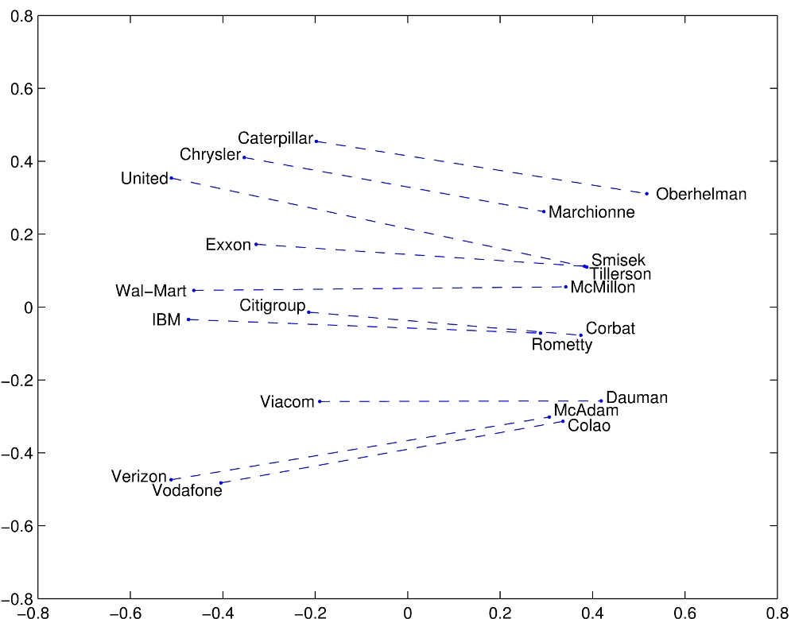

Embeddings
the Future of NLP?
Rob Mealey
Mostly Bad Java, Nowadays
So what are we talking about?
EMBEDDINGS
word embeddings...
phrase embeddings...
document embeddings...
thought embeddings...
MOAR IMBEDDINGS!
Ok but wtf?
techniques for learning
"distributed representations"
of words, phrases, whatever
representations are
vectors of numbers

GEOMETRIC relationships
Meaning? Similarity?
Unsupervised
(no labels required)
But lots of raw data is required
What EMBEDDINGS can do
word/phrase/document similarity
Analogy!

not enough
for you?



What "embeddings" are NOT
Deep Learning
- Two most popular implementations:
- word2vec, Google 2013
- GloVe, Stanford 2014)
both implementation of word2vec
are SHALLOW neural networks.
GloVe is a highfalutin
log-linear model.
Google just published successor to word2vec: "Swivel"
Feb 6, 2016
Swivel uses stochastic gradient descent to perform a weighted approximate matrix factorization, ultimately arriving at embeddings that reconstruct the point-wise mutual information (PMI) between each row and column feature. Swivel uses a piecewise loss function to differentiate between observed and unobserved cooccurrences.
nary a "neural" to be found
deep neural networks,
especially in NLP applications,
usually have embedding layers.
What "embeddings" ARE
BIG DATA
Tomas Mikolov even told me that the whole idea behind word2vec was to demonstrate that you can get better word representations if you trade the model's complexity for efficiency, i.e. the ability to learn from much bigger datasets. Omer Levy on Quora

A peek under the hood
implicit decomposition
of massive context matrix
What "embeddings" can do
FOR US
automatable
customer-specific
feature engineering
similarity querying
that gets better
the more data we get
actors, entities, organizations
My point:
- our customers pump a lot of unlabeled data through our system
- more than enough to train models for each with "valid" geometries
all sorts of interesting, unsupervised things.
- paragraph vectors
- document vectors,
- "thought" vectors,
- entity vectors,
- on and on
If you want to sit here all afternoon,
I'll happily keep talking.
Further reading and tools
word2vec
GloVe
gensim (Radim Rehurek)
Yoav Goldberg and Omer Levy
interesting applications:
Questions?